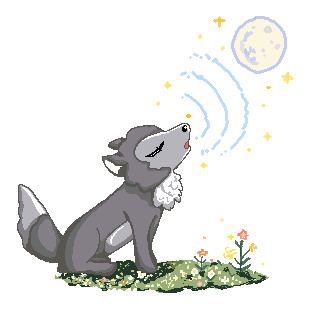
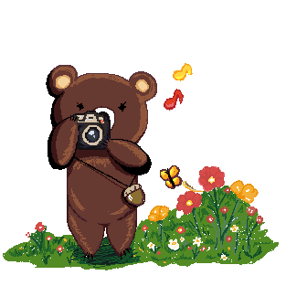
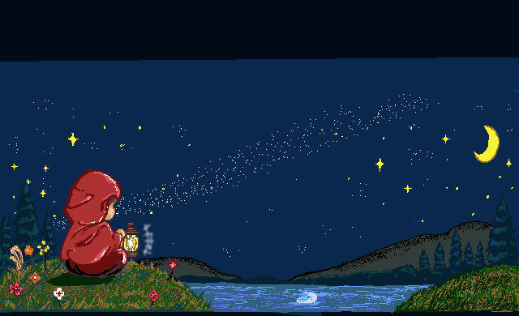
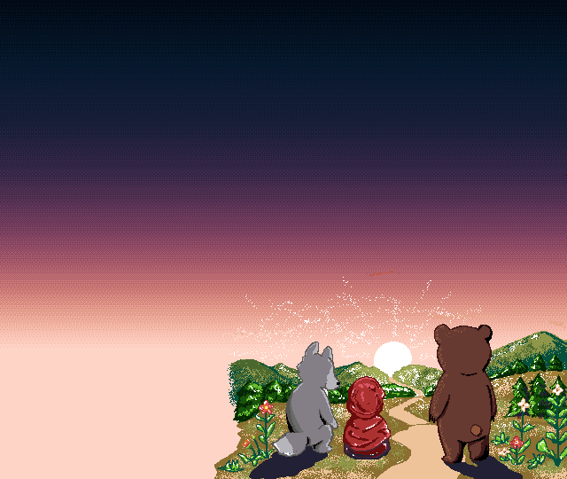

森には、ふたりの仲間がいます。

くまたんのカメラ
感じたことを、かたちにする
映像・ドット絵の制作
手ざわりのあるものを、ひとつずつ。映像やドット絵の制作をしています。
- 企業の記念映像の制作 （創立100周年／内容は非公開）
- Vtuber動画の企画・制作 （自主・依頼あわせて100本以上）
- 自主制作「ちいさな森のおとぎ話」 （ドット絵アニメ）

NEMOSHAのこと
転勤で、いろんな土地に移り暮らしてきました。
子どもの頃は、学校に行けない時期もありました。
場所が変わっても、灯りを持って、自分の根っこを探しています。
その途中で見つけた思いを、言葉と声、映像で、カタチにしているのがNEMOSHAです。

ご依頼・ご相談
お問い合わせの窓口は、ただいま準備中です。